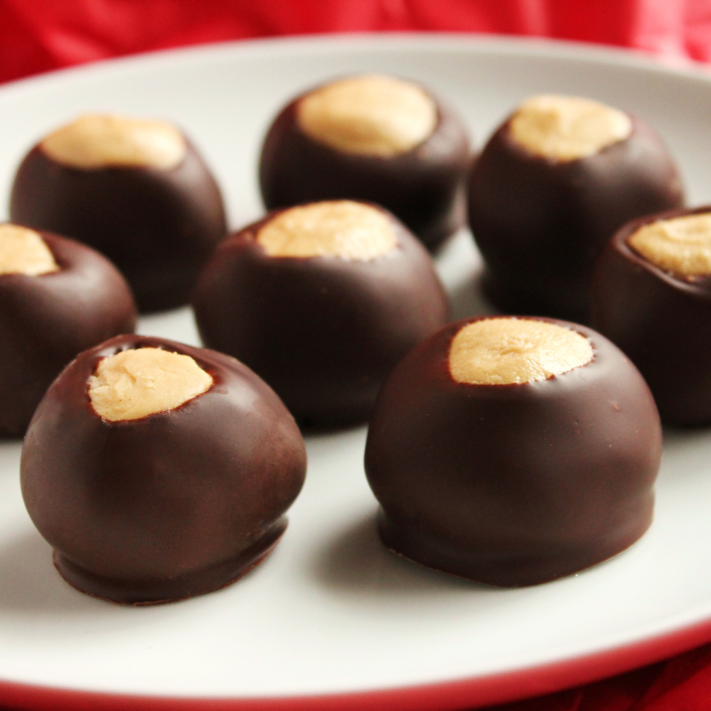

Buckeyes

Description
This is a recipe for buckeyes. Super easy to make.... This is a favorite go-to!
Good luck with this recipe, and may the odds be ever in your favor
Ingredients
- 4 cups sifted confectioners' sugar
- 1 1/2 cups creamy peanut butter
- 1/2 cup butter, softened
- 1 teaspoon vanilla extract
- 6 ounces semi-sweet chocolate chips
- 2 tablespoons shortening
Cooking Instructions
- Line a baking sheet with waxed paper; set aside.
- Place confectioners' sugar, peanut butter, softened butter, and vanilla into a large bowl; mix together with your hands to form a smooth stiff dough. Shape into balls using 2 teaspoons of dough for each ball. Place on prepared baking sheet; refrigerate until ready to coat.
- Melt shortening and chocolate together in a metal bowl over a pan of lightly simmering water, stirring occasionally, until smooth; remove from heat.
- Remove balls from the refrigerator; insert a wooden toothpick into a ball, and dip into melted chocolate. Return to baking sheet, chocolate-side down, and remove toothpick. Repeat with remaining balls. Refrigerate for 30 minutes to set.